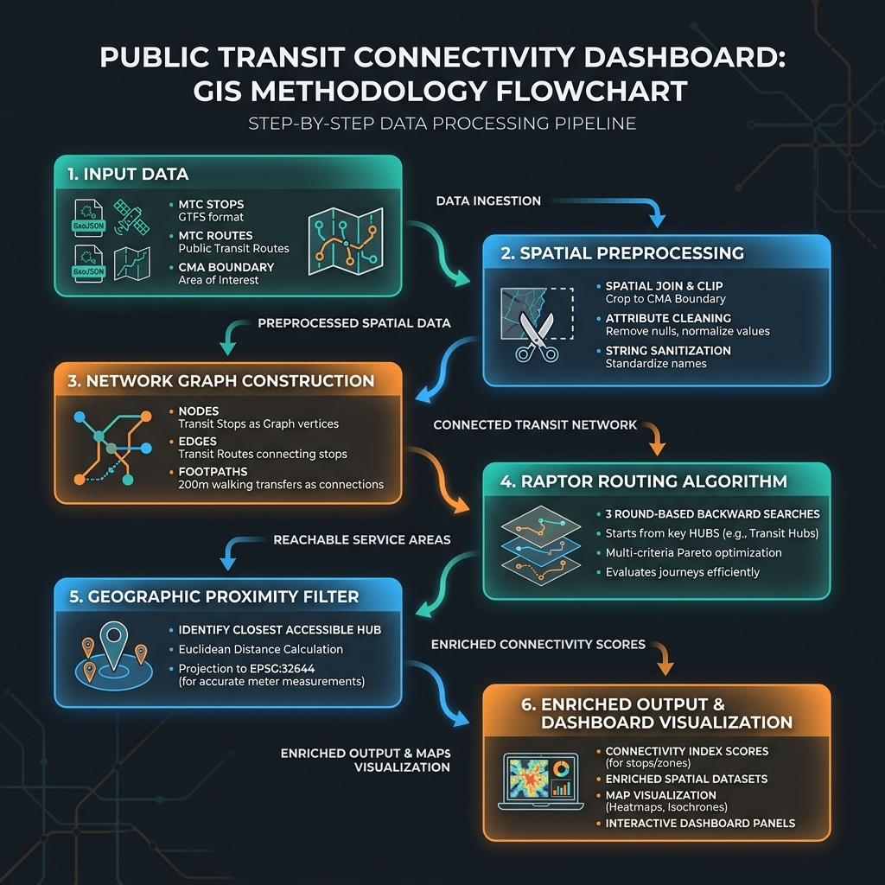
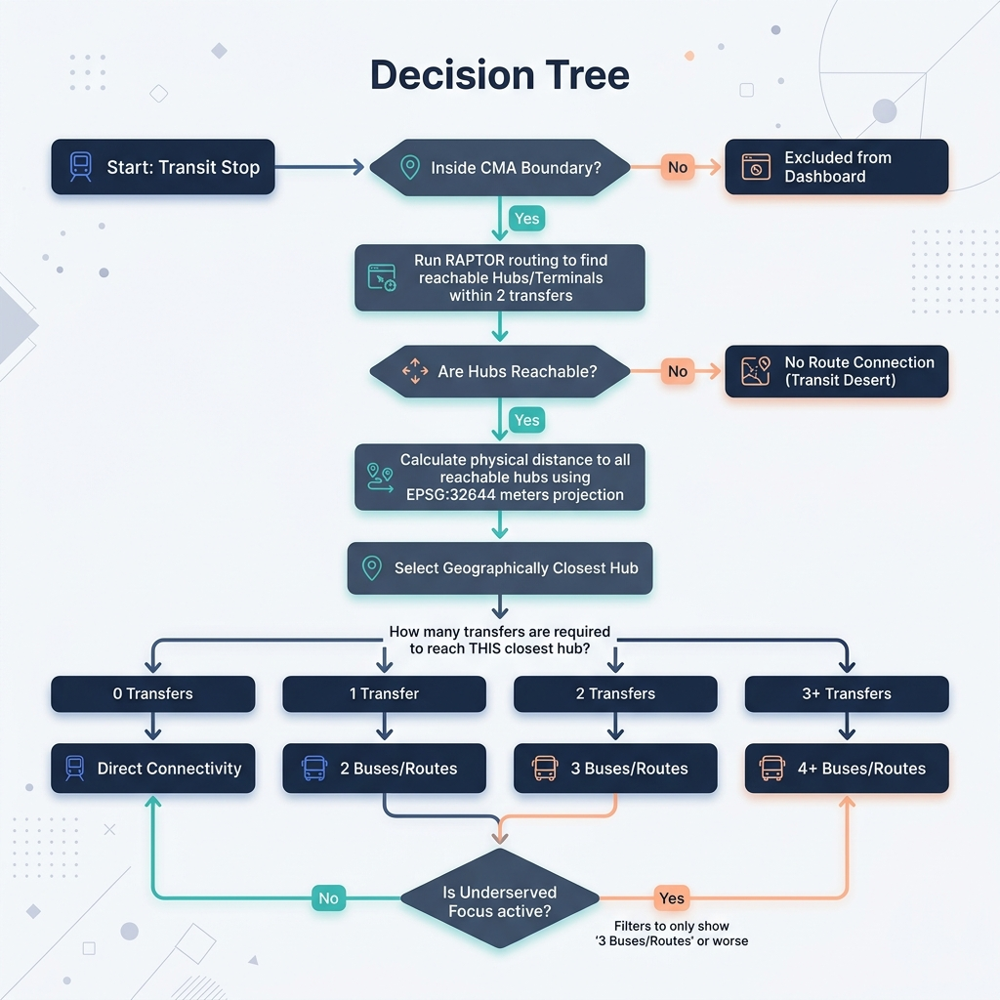

Prepared By: Senior Urban Planner & GIS Solutions Developer
Context: Transport Infrastructure & Spatial Analytics Advisory
Drawing upon best practices established across global infrastructure engagements (World Bank, PwC, etc.), this report outlines the robust geospatial and algorithmic methodology used to map, analyze, and visualize public transit connectivity across the Chennai Metropolitan Area (CMA). The objective was to overcome the limitations of fragmented, highly variable raw datasets from the MTC (Metropolitan Transport Corporation) and CMRL (Chennai Metro Rail Limited) to build a deterministic, route-based connectivity index. This index calculates how efficiently any bus stop in the CMA connects to major transit facilities and hubs, effectively pinpointing systemic "transit deserts."
Below are the visual reference charts detailing the implementation methodology:
This flowchart illustrates the step-by-step data processing pipeline from raw input layers to spatial clipping, name sanitization, network graph construction, RAPTOR calculations, and final dashboard visual exports.

This decision tree models the exact logical rules used to determine the connectivity level of each stop on the map (Direct, 2 buses/routes, 3 buses/routes, 4+ buses/routes, or No route connection) based on geographic proximity to reachable hubs.

In major metropolitan planning, evaluating transit equity and access requires moving beyond simple coverage buffers (e.g., "X percent of the population lives within 500m of a stop"). We must evaluate the network topology—understanding how many transfers a commuter needs to reach a critical node (terminal or depot).
Our goal was to develop an automated ETL (Extract, Transform, Load) pipeline that builds a highly accurate transit graph from messy, real-world Open Data and operational GIS files, and then deploy an enterprise-grade routing algorithm to assess connectivity in both "Bus-Only" and "Multimodal" (Bus + Metro + Suburban Rail) scenarios.
A fundamental challenge in civic tech and urban transport analytics is the volatility of the underlying data. As we "came across" the raw MTC route and stop datasets, it became immediately apparent that raw string matching would fail due to severe inconsistencies in naming conventions. Establishing Data Purity became step one.
To ensure high fidelity in graph construction, we implemented a rigorous sanitization protocol:
In the source mtc_bus_stops_all.geojson, the `route name` attribute was frequently a malformed text string (e.g., erratic brackets, semicolons, and internal quotes) rather than a clean JSON array. We engineered a custom Regex-based parser that split on multiple delimiters ([,;/]), effectively rescuing hundreds of stops from being falsely classified as disconnected. For instance, the "Metrological Department Sterling Road" stop initially registered 0 routes but yielded 27 valid route matches post-sanitization.
Where algorithmic heuristics hit their limit, we applied targeted human-in-the-loop QA overrides based on spatial mapping. Critical infrastructure nodes, such as the Chennai Koyambedu Mofussil Bus Stand and Kundrathur Bus Depot, contained upstream route strings that were too degraded to parse automatically. A hardcoded validation dictionary was deployed to force these known facilities into the "Direct" connectivity category.
The system was architected using an enterprise GIS Python stack (GeoPandas, Shapely, PyProj) to act as the heavy ETL backend, serving compiled GeoJSONs to a lightweight Leaflet.js frontend dashboard.
We modeled the transit network as a spatial graph:
STRtree spatial index. This R-Tree geometry structure queried all nodes to dynamically generate valid "walking edges" for any two stops located within a 200-meter radius of one another.A significant methodological breakthrough addressed the lack of comprehensive point data for MTC depots. We utilized a spatial inference technique:
To calculate the true connectivity of every stop, we deployed an algorithm modeled heavily on RAPTOR (Round-Based Public Transit Routing), a standard in modern transit planning operations.
The algorithm was executed twice to simulate different commuter environments:
By searching backward from target hubs, the algorithm traces **all** reachable terminals/depots for every stop within 3 rounds (up to 2 transfers). It then calculates the straight-line geographic distance to all of them, selects the **physically closest reachable terminal/hub**, and sets the stop's connectivity category based on that closest facility:
For dashboard tooltip generation, commuter proximity to terminals was calculated in accurate meters rather than degrees. Coordinates were projected from WGS84 (EPSG:4326) to the local projected coordinate system (EPSG:32644) using PyProj. The program computes the Euclidean distance to all reachable terminals and selects the geographically closest one, tying the stop's transfer count to that closest facility. Additionally, the dashboard's "Underserved Focus" is updated to isolate stops requiring 2 or more transfers (3+ buses/routes or disconnected) to identify the true transit deserts.
Finally, to maintain analytical integrity relative to jurisdictional boundaries, a strict spatial clip was applied using Shapely.prepared against the unified CMA polygon boundary. Any generated data points falling outside the CMA were aggressively pruned.
Conclusion: The resulting dataset and interactive Leaflet dashboard provide stakeholders and policymakers with a transparent, algorithmically verified view of Chennai's transit connectivity. By cleaning chaotic data strings, constructing a spatial-transfer graph, and employing standard RAPTOR routing principles, the application successfully transitions raw point data into actionable, network-level urban intelligence.